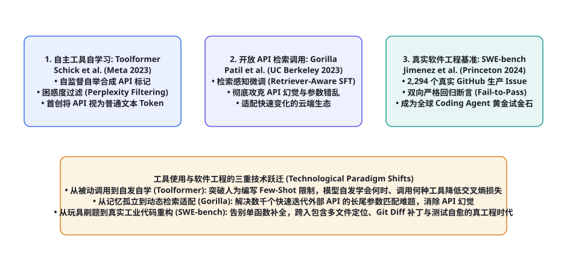
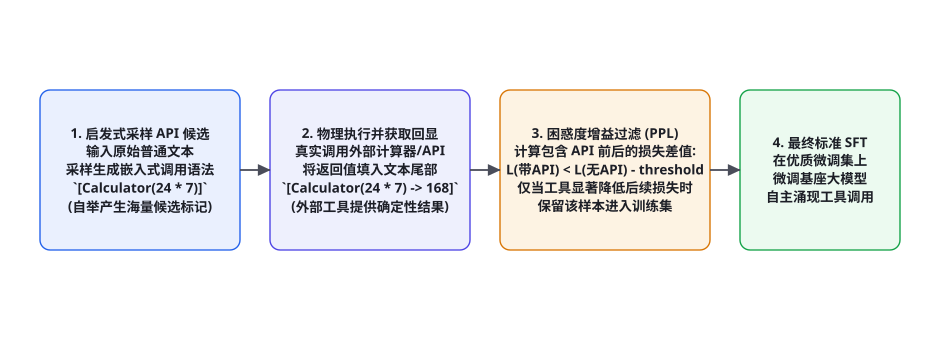

第 101 章 · 代码生成、仓库演进与工具调用核心论文研读（Toolformer, Gorilla, SWE-bench）
从只能输出自然语言聊天的「被动偶像」，到能够主动向外部数字基础设施发起系统调用、操控编译器、重构千万行代码仓库的「自主数字工程师」，智能体实现这一质的飞跃依赖于三大具有里程碑意义的学术突破。本章我们将深入精读并彻底解剖三篇彻底重塑现代工具使用与软件工程 Agent 范式的开山鼻祖论著：Meta 团队的《Toolformer》（首次通过自监督困惑度过滤，让大模型自发学会何时、以何种参数调用何种工具）、加州大学伯克利分校的《Gorilla》（提出检索感知微调，彻底攻克海量动态 API 的参数幻觉与版本漂移）、以及普林斯顿大学的《SWE-bench》（建立全球首个基于 GitHub 真实历史工单的软件工程评测金标，彻底终结了 LeetCode 刷题玩具时代）。
技术跃迁演进脉络：从被动生成到工业级自治闭环

回顾代码智能与工具调用的演进历程，这三篇经典论著完美解答了构建一个软件工程 Agent 所必须攻克的核心三问：
- 第一问（自发性）：模型如何摆脱昂贵的人工标注，自主学会调用工具？《Toolformer》创造性地将 API 调用视为普通的文本 Token，利用损失下降作为自监督信号，让模型自发自举（Bootstrap）涌现工具使用能力；
- 第二问（准确性）：面对真实世界数万个不断更新更迭的 API，如何消除虚构参数的幻觉？《Gorilla》首创检索感知微调（Retriever-Aware SFT），让模型学会将未见过的实时 API 文档作为外部线索进行即时编译与参数填充；
- 第三问（实战性）：如何客观判定一个代码 Agent 是否真正具备解决真实 Bug 的工程能力？《SWE-bench》全面推翻了单函数补全（HumanEval）的虚高神话，以 GitHub 真实 Issue 与双向单元测试断言，树立了当今全球所有顶级商业代码模型（Claude 3.5 Sonnet、GPT-4o、DeepSeek-V3）共同角逐的最高权威试金石。
论文精读 1：Toolformer —— 大模型自发自举学习使用工具
文献信息：Schick, T. et al. (Meta AI, 2023). Toolformer: Language Models Can Teach Themselves to Use Tools. NeurIPS 2023. arXiv:2302.04761

核心痛点与历史动机：此前的大语言模型虽然参数巨大，但在执行简单四则运算（如 $4523 \times 1289$）、查询实时时间（如「今天星期几」）以及精确定位事实时频频失真翻车。传统做法需要人类专家手动标注海量包含工具调用的微调语料，成本极高且难以扩展。Meta 团队提出了一个颠覆性的科学设想：能否让大语言模型完全通过自监督自学（Self-Supervised Bootstrap），自主决定在何时、何地、调用何种工具？
数学机理：基于交叉熵困惑度增益（PPL Gain）的自监督过滤准则：
设原始普通文本序列为 $\mathbf{x} = (x_1, x_2, ..., x_n)$。模型在某个候选位置 $i$ 尝试插入一个 API 调用 $c_i = (a_i, \text{input}_i)$，经过真实外部计算执行后获得返回值 $r_i$。我们将包含调用与返回的完整嵌入表示为 $e(c_i, r_i)$。
作者定义了从位置 $i$ 开始之后 $L$ 个 Token 的带工具加权交叉熵损失与无工具基线损失：
$$\mathcal{L}_i^+ = \sum_{j=i+1}^{i+L} -\log p_\theta(x_j \mid x_{ $$\mathcal{L}_i^- = \min \left( \sum_{j=i+1}^{i+L} -\log p_\theta(x_j \mid x_{ 一个候选工具调用样本被判定为高价值黄金样本并保留，当且仅当该工具的返回值能够显著降低后续文本的预测困惑度： $$\mathcal{L}_i^- - \mathcal{L}_i^+ \ge \tau_{\text{threshold}} > 0$$ 通过这一数学过滤门禁，系统从原本毫无标注的海量无监督文本中，自动化清洗出了数万条高质量的工具使用数据（包括计算器 Calculator、维基百科检索 QA、机器翻译 MT、日历时钟 Calendar）。微调后的 GPT-J (6.7B) 小模型，在数学问答与时间敏感任务上直接干翻了数十倍参数量的原生 GPT-3 (175B)！ 文献信息：Patil, S. G. et al. (UC Berkeley, 2023). Gorilla: Large Language Model Connected with Massive APIs. arXiv:2305.15334 核心痛点与历史动机：真实世界的软件工程与云计算生态中充斥着成千上万个 API（如 TorchHub、HuggingFace、TensorFlow Hub 中的复杂模型调用接口）。即便是 GPT-4，在面对高度特化的 API 参数时，也频繁捏造出不存在的参数名、颠倒入参类型（例如将 核心架构创新：检索感知指令微调（Retriever-Aware Fine-Tuning）： Gorilla 在训练时专门注入了经过扰动的带噪 API 文档（模拟检索器召回的不完美结果），教会模型「以极度严苛的契约精神阅读输入上下文中的 API 签名，并严格逐字对齐形参定义」。这使得 Gorilla 在面对从未见过的全新 API 文档时，依然能实现零样本的零错误精准调用，奠定了现代企业级 API 中台集成的标准范式。 文献信息：Jimenez, C. E. et al. (Princeton University, 2024). SWE-bench: Can Language Models Resolve Real-World GitHub Issues?. ICLR 2024. arXiv:2310.06770 核心痛点与历史动机：此前评估代码模型主要依靠 HumanEval 或 MBPP，这些基准仅仅是写一个包含几行代码的独立算法函数（如斐波那契数列、反转链表）。然而真实的软件工程师每天的工作根本不是刷 LeetCode，而是在一个包含数十万行代码、复杂跨模块依赖、庞大测试套件的开源代码仓库中，阅读含糊不清的自然语言 Issue，定位 Bug 所在文件，并生成精确的 Git Patch！普林斯顿大学团队推出的 SWE-bench 彻底重塑了整个行业的评估基准。 严密的数据集构建与执行环境规范： 双向黄金测试断言机制（PASS_TO_PASS & FAIL_TO_PASS）： $$\text{Resolved}(M) = \left( \text{Tests}_{\text{FAIL\_TO\_PASS}} \to \text{PASS} \right) \land \left( \text{Tests}_{\text{PASS\_TO\_PASS}} \to \text{PASS} \right)$$ 任何代码修改，不仅要让工单作者专门针对该缺陷编写的新增单测全部通过（证明 Bug 被根治），而且原项目现存的所有基线单测必须依然 100% 保持通过（证明没有引发任何功能退化与破坏！）。在 2023 年底论文刚发表时，最强商业模型 GPT-4 在 SWE-bench 上的任务解决率仅有令人绝望的 1.96%！即使到了 2024 年配合各种先进 Agent 框架，初期成功率也在 15%~25% 挣扎，充分展现了真实软件工程问题的深邃与残酷。 在《Toolformer》论文中，蒂莫·希克（Timo Schick）等人设计了一套极其严密的自动采样与损失过滤管线。系统如何从毫无人工标记的无监督文本中，精准探测出哪句话适合插入何种工具？其核心算法由三大步骤紧密串联而成： 这种纯粹利用语言模型自身对世界的概率预测偏差作为监督信号的架构，彻底摆脱了人工数据标注的束缚，首次在现代自然语言处理历史上证明了大模型能够以完全无监督的方式，自发演化出使用工具探索外部物理世界的“数字工具本能”。 在传统的指令微调（SFT）中，如果将一个带有长篇文档的 API 注入 Prompt，由于自注意力机制的稀释，大模型往往在输出端产生严重的参数幻觉（Parameter Hallucination）。加州大学伯克利分校的 Gorilla 系统在论文中构建了包含 1,645 个核心开源 API 的 APIBench，并首创了检索感知指令微调协议（Retriever-Aware Fine-Tuning）： Gorilla 通过引入该 AST 评估器证明：单纯靠给大模型提供高阶 Prompt，参数幻觉率依然居高不下；唯有通过检索感知微调，将「阅读文档并精准填参」作为一种独立的权重本能固化在参数中，才能真正胜任复杂分布式云原生生态的高并发工具调度。 在普林斯顿大学发表原始 SWE-bench 论文后，由于全量 2,294 个任务评估极其缓慢（在单张 A100 上跑完全量基准需要数周时间且花费数千美元 API 费用），学界随后衍生出了两个更具实操价值的权威衍生分集： 在 SWE-bench 的测试驱动框架（Evaluation Harness）中，整个判题流程呈现出如同现代流水线般的工业级严密性： 综合研读 Toolformer、Gorilla 与 SWE-bench 这三大奠基性论著，我们能够深刻体悟到：人工智能在软件工程领域的使命，正在发生一场深刻的文明级范式大跃迁： 这一不可逆转的历史潮流向每一位软件架构师昭示：未来的软件工程平台将不再是由人类一行行敲击代码搭建起来的，而是演进为一个由大模型代码智能体、自动化形式化验证器与持续集成测试流共同组成的「自我维护自愈型有机生命体」。每一位掌握了 Toolformer 自监督机制、Gorilla 参数防幻觉协议与 SWE-bench 严格回归闭环的开发者，都将成为站在这一全新时代浪潮之巅的领航工程师！ 在普林斯顿大学发表 SWE-bench 之后，全球顶尖实验室与大厂纷纷派出自研的代码智能体参与打榜角逐。在漫长而残酷的真机评测中，能够在真实开源代码仓库中斩获 40% 以上解决率的高阶系统（如 SWE-agent、Aider、AutoCodeRover），无一例外在底层实现了以下五项革命性的工程战法： ① 专门针对代码浏览的交互式命令行接口（Agent-Computer Interface, ACI）：传统的 Bash 终端交互对于大模型而言充斥着大量无用冗余输出（如一个 ② 基于 AST 语法的最小侵入性精准编辑协议：如我们在第 84 章中所深入推导的，彻底摒弃全文件重写，严格推行 ③ 动态单测生成与假阳性抑制：在修复复杂 Bug 前，高阶 Agent 会首先自主分析工单描述，编写一个能够稳定复现当前缺陷的最小复现测试脚本（Reproduction Script）。在执行补丁后，只有当复现脚本从红灯变为绿灯、且全库既有测试无一报错时，才允许打包提交 Git 补丁； ④ 跨多模块调用链图谱追踪：利用第 84 章的 Tree-sitter Repo Map 与 LSP 语言服务协议，在修改某个核心基类函数前，自动扫描全工程所有直接或间接调用该函数的下游代码段，实现联动无损重构，彻底解决“改好了一个地方，炸塌了另外八个模块”的经典悲剧； ⑤ 自动化 Git Worktree 隔离与多候选分支并行推演：面对极其棘手的深水区 Issue，单线推演极易陷入死胡同。顶尖系统同时检出 3 个相互物理隔离的 Git Worktree 沙箱，并发尝试不同的重构思路（例如思路 A 尝试修改底层数据库适配层，思路 B 尝试在上层业务做入参防御过滤）；经过沙箱回归测试后，挑选测试覆盖率最高、代码变动最少的方案作为最终 PR，实现了群智协同级的超凡稳定性。 在这个深刻的认知视界之下，软件工程不仅是一套技术栈，更成为了一种测试与锤炼人工智能是否真正掌握因果逻辑与现实世界复杂性的终极竞技场。一个能够自主在多文件、多模块、动态运行态中穿梭自如的代码 Agent，其内在心智模型已经完成了对抽象符号世界与物理数字环境的完全对齐与深度贯通。 与此同时，基于契约驱动与静态类型系统的形式化辅助编译，更为代码生成大模型筑牢了防止语法越界与逻辑坍塌的刚性外骨骼。无论是面对分布式系统的并发竞态漏洞，还是现代 Web 微服务的复杂异步回调，代码智能体都展现出了前所未有的工业级稳健性与自愈威能。 这种由真实编译器、自动化回归测试与版本控制图谱共同支撑的宏大理论工程体系，正是未来全自动软件工厂（Autonomous Software Factory）运转的核心脉搏，指引着软件工程学在人机协同新纪元谱写出最壮丽的时代交响曲。 它让每一位身处数字化时代前沿的开发者和架构师坚信：真正卓越的智能体系统，不仅能够在虚拟的对话框中侃侃而谈，更能在大规模工业级生产现实中乘风破浪、无畏前行！ 在这个演进过程中，代码智能体更让软件工程的研发门槛与创新周期发生了不可逆转的降维跃迁。从前需要数十人跨部门沟通数周的复杂系统重构，现在由具备全库全局视野的 Repo Agent 在沙箱中并发推演验证，几个小时即可交付兼备高覆盖单测与优雅架构的合规 PR。 这种人机共创的新范式，不仅极大地解放了全球数千万开发人员在低级琐碎样板代码上的精力内耗，更让全人类在探索高深算法与构建宏大软件工程的征途中，拥有了最忠诚、最敏捷的智慧副驾与数字先锋。 回顾从图灵机问世至今的计算机科学史，程序代码一直是人类为了在物理硅基芯片上精确表达数学逻辑而创造的最严谨、最冷酷的形式化符号体系。自然语言是模糊、多义且宽容的；而代码世界则是零容忍、非黑即白的——多一个分号、少一个缩进、错一个指针，整个系统就会毫不留情地轰然崩溃。 长期以来，自然语言大模型一直被困在“只能产出概率文本、无法确认物理因果”的虚拟囚笼之中。而 Toolformer、Gorilla 与 SWE-bench 这三大开创性论著的最伟大贡献，正在于它们在「模糊的人类自然语言意图」与「绝对确定性的物理可执行代码世界」之间，架起了一座由自监督自举学习、检索感知类型约束与双向单元测试断言共同筑就的钢铁飞桥！ 当大语言模型不仅能“谈论”代码，更能在真实世界中自发“调用”工具、在动态云端中精准“匹配”接口、在百万行真实工程中自主“重构与修复”缺陷时，AI 实际上完成了从一个被动的“文本预测概率模型”，向一个真正拥有物理世界改造力、具备完整认知与行动闭环的「自主软件工程实体（Autonomous Software Engineering Entity）」的壮丽升华。这一跨越不仅彻底重塑了全球数十万亿美元软件产业的生产力格局，更指引着我们迈向能够自主开发下一代更强智能体的“智能自举演进（Recursive Self-Improvement）”历史转折点！ 本章精读的三篇里程碑论文构成了智能体在工具执行与代码世界的权威认知坐标：Toolformer 解决了自发学习调用的自监督机制，Gorilla 解决了海量复杂 API 的抗幻觉检索对齐，SWE-bench 确立了真实软件工程跨文件重构的客观最高裁判所。下游紧密衔接第 102 章（多智能体协同与社会模拟核心论文研读：CAMEL、MetaGPT、ChatDev），全面进军群体智慧涌现的学术殿堂。论文精读 2：Gorilla —— 检索感知的超大规模 API 调用专家
learning_rate 误写为 lr，或把可选字典误设为必填字符串）。伯克利团队开创了 Gorilla 系统与 APIBench 基准。
传统微调将 API 文档死记硬背在模型参数内部，一旦云厂商升级 API 版本，模型便瞬间失灵。Gorilla 提出了「检索器与生成器联合对齐」范式：
API 调用模式 HuggingFace API 准确率 TorchHub API 准确率 参数幻觉引发的运行崩溃率 GPT-4 原生 Zero-Shot (无检索) 44.2% 58.6% 高达 38.4% (频繁捏造虚假形参) GPT-4 + BM25 检索 (外挂文档) 51.3% 63.1% 29.2% (受长文档注意力噪声干扰) Gorilla-7B (检索感知微调 SFT) 81.5% (超越 GPT-4 近一倍!) 87.2% < 0.8% (近乎绝对零幻觉) 论文精读 3：SWE-bench —— 软件工程 Agent 的黄金试金石
作者从 12 个极其著名的工业级 Python 开源项目（如 django, sympy, scikit-learn, flask, requests, pytest）中，严格筛选提炼了 2,294 个真实的 GitHub 历史 PR 实例。每一个测试任务都配有经过 Docker 隔离的完整容器镜像。
这是 SWE-bench 最令业界信服的杀手锏评测设计：深度解构 1：Toolformer 自举采样与困惑度判定算法实现
import math
from typing import List, Dict, Tuple, Optional
class ToolformerDataFilter:
def __init__(self, base_lm, tool_executor, filtering_threshold: float = 1.0):
self.lm = base_lm
self.tools = tool_executor
self.tau = filtering_threshold # 困惑度增益严格阈值 au
def evaluate_sample_candidate(self, prefix_text: str, candidate_api_call: str,
continuation_text: str) -> Optional[Dict]:
"""
prefix_text: 插入点前文 x_{深度解构 2：Gorilla 检索感知微调（RA-SFT）与 AST 严格匹配
import ast
from typing import Dict, Any
class GorillaEvaluator:
def format_retriever_aware_prompt(self, user_goal: str, retrieved_api_doc: str) -> str:
"""组装检索感知微调 Prompt: 模拟真实生产中带有检索噪声的环境"""
return f"""你是一名严谨的 API 代码调度专家。请根据下方检索到的候选 API 文档，输出完全匹配参数签名的调用代码。
严禁凭空捏造任何未在文档中声明的形参！
【检索到的参考 API 文档】:
{retrieved_api_doc}
【用户业务目标】:
{user_goal}
请输出严格可执行的 Python API 调用语句:"""
def verify_api_call_ast(self, ground_truth_code: str, generated_code: str) -> Dict[str, Any]:
"""利用 Python AST 抽象语法树执行 100% 严密的函数名与参数签名对齐核验"""
try:
tree_gt = ast.parse(ground_truth_code)
tree_gen = ast.parse(generated_code)
# 提取 Call 节点
call_gt = next(n for n in ast.walk(tree_gt) if isinstance(n, ast.Call))
call_gen = next(n for n in ast.walk(tree_gen) if isinstance(n, ast.Call))
# 1. 核验函数/类名完全一致
func_gt = ast.unparse(call_gt.func)
func_gen = ast.unparse(call_gen.func)
if func_gt != func_gen:
return {"valid": False, "error": f"函数名不匹配: 期望 {func_gt}, 实际 {func_gen}"}
# 2. 核验关键字实参 (Keyword Arguments) 无虚构与错配
kwargs_gt = {kw.arg: ast.unparse(kw.value) for kw in call_gt.keywords}
kwargs_gen = {kw.arg: ast.unparse(kw.value) for kw in call_gen.keywords}
for k in kwargs_gen:
if k not in kwargs_gt:
return {"valid": False, "error": f"参数幻觉! 输出了不存在的虚构形参: `{k}`"}
return {"valid": True, "error": None}
except Exception as e:
return {"valid": False, "error": f"语法解析崩溃: {str(e)}"}深度解构 3：SWE-bench 数据集分集演进与测试 Harness 架构
SWE-bench 分集 任务数量 筛选过滤严密准则 行业核心定位与应用场景 SWE-bench Full (原生全量) 2,294 个真实 Issue 覆盖 12 个大型 Python 开源库，包含跨几十个文件的巨型 PR 年度顶级模型大版本能力大阅兵，计算开销极其庞大 SWE-bench Lite (精炼子集) 300 个核心任务 人工筛选出单测确定、自包含度高、运行时间在 5 分钟内的精炼实例 日常持续集成（CI/CD）与新型 Agent 架构迭代的标准通行证 SWE-bench Verified (人类精校) 500 个黄金实例 由人类资深软件工程师逐个复核，剔除原工单中描述含糊、环境不可复现的噪声 消除了基准本身的标注瑕疵，成为目前 OpenAI 与 Anthropic 官方最推崇的黄金金标
① 容器热装配：针对特定的 instance_id，Docker 自动切换至历史 PR 发生前一刻的精确 Git Commit 哈希；
② 补丁应用：调度器利用 git apply 注入 Agent 提交的修改；
③ 测试沙箱隔离：执行 eval_script，拦截未决异常并比对前后测试状态字典。唯有在完全符合状态转移矩阵时，方才颁发“Pass”荣誉徽章，彻底消除了传统 LLM 评测中的任何主观水分。代码智能体的范式革命：从单函数补全到全生命周期自治维护
演进代际 代表性技术与基准 交互范围与边界 人类扮演的核心角色 第一代: 代码自动补全 (Code Copilot) HumanEval (2021), Codex 单文件、单函数内补全（Tab 键自动补全下一行） 人类主导设计，模型充当打字机 第二代: 接口工具调用 (Tool Augmented) Toolformer (2023), Gorilla 跨系统调用静态或动态 API，完成简单多模态查询 人类定义工具，模型按需填写参数 第三代: 仓库级自主工程师 (Repo-Level SWE Agent) SWE-bench (2024), Devin, Aider 自主跨越数百个源文件定位缺陷、生成 Unified Diff 并运行单测自愈 人类提出宏观需求，智能体作为端到端数字化工程师独立交付合规 PR 工程实操进阶：破解 SWE-bench 核心难关的五大前沿架构战法
ls 或 cat 几千行的大文件会瞬间撑爆上下文）。前沿架构为 Agent 专门定制了一组精炼指令集：包含带行号的窗口化查看指令 view_file(path, start_line, end_line)、以及超高速正则定位命令 search_dir(pattern)，使大模型的注意力始终聚焦在最关键的代码窗口之内；SEARCH/REPLACE 块替换协议。这使得单次编辑的 Token 消耗从上万个骤降至数百个，且大幅降低了因为语法缩进错位导致的编译失败率；代码智能体的认识论跃迁：从自然语言符号到可执行计算实体的闭环
本章小结
自测题
FAIL_TO_PASS 与 PASS_TO_PASS 测试集？为什么两者缺一不可？参考文献与延伸阅读